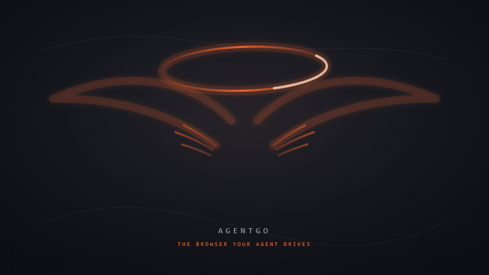
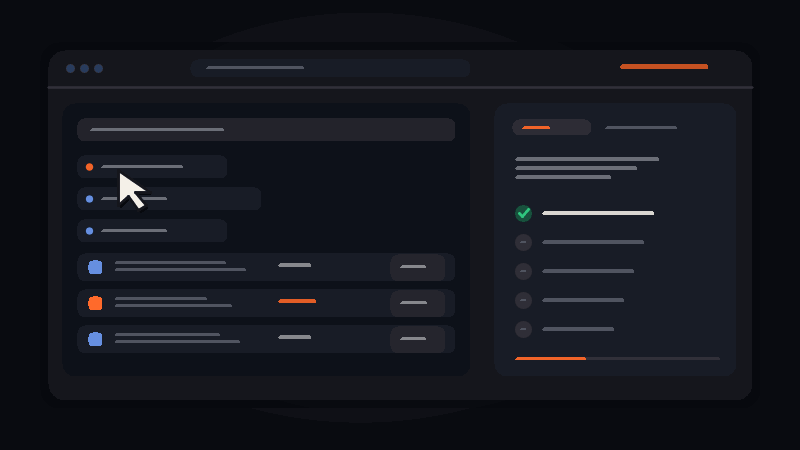

Human-parity input
Mouse, keyboard, hover, drag, scroll, clipboard, forms, menus, dialogs, file pickers, tabs, windows, media, zoom, print, and the details that make a browser feel real.
A browser surface built for agents that need to see clearly, act like a human, and finish the web without spending the whole context window narrating every click.


AgentGo is not just a click-and-search helper. It is being shaped as a complete control surface: observation, input, navigation, extraction, evidence, recovery, and the human boundaries that make autonomy trustworthy.
Mouse, keyboard, hover, drag, scroll, clipboard, forms, menus, dialogs, file pickers, tabs, windows, media, zoom, print, and the details that make a browser feel real.
DOM, HTML, accessibility semantics, geometry, visible text, screenshots, crops, and deltas — chosen by the agent for the next decision instead of dumped wholesale.
Search, filter, paginate, extract, compare, fill, upload, verify, retry, and return structured results with evidence instead of a transcript of tiny actions.
Approval Needed and Full Access modes, pause/resume, a visible Stop Agent control, CAPTCHA handoff, and purchases gated even when autonomy is enabled.
Separate instances, profiles, storage, random identifiers, parallel runs, and local communication so one agent’s state never quietly becomes another’s.
Screenshots, HTML, downloads, traces, hashes, and structured artifacts stay inspectable and local, ready for the user or agent to review.
The agent remains the planner. AgentGo handles the browser mechanics, state transitions, and evidence so the planner can spend its context on decisions that matter.
A capable agent should not have to spend its entire context proving that it clicked a button. AgentGo returns the smallest truthful state that keeps the work moving.
The browser can move quickly without taking important decisions away. The user chooses the mode; hard boundaries remain visible.
Prepare the work, inspect the page, fill what is safe, and pause at sensitive commitments that need a person.
Let the agent operate continuously after the user enables it. Credentials, purchases, and other configured boundaries still behave deliberately.
Pause gives the user room to explain or repair a page. Stop Agent is immediate, red, and cancels the current request with no ambiguity.
CAPTCHA and bot-verification screens become a clear Windows notification asking for help. No bypass theater — the user helps, then the agent continues.
AgentGo is an active build toward the most agentic browser surface: local, inspectable, token-aware, human-controllable, and open to every agent host that can learn its skill.
Read the full project brief